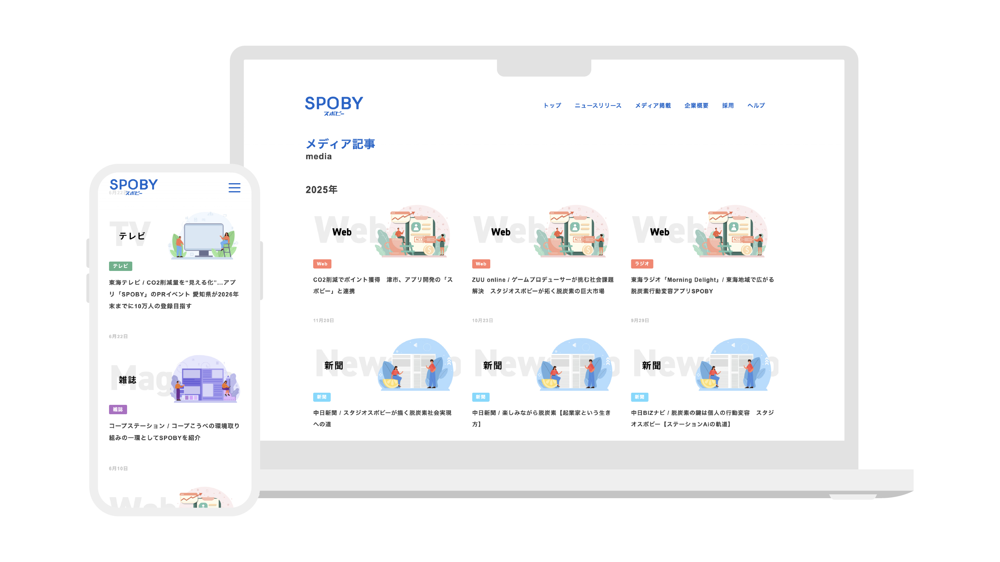
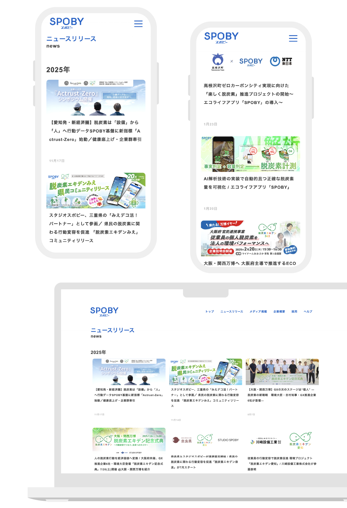
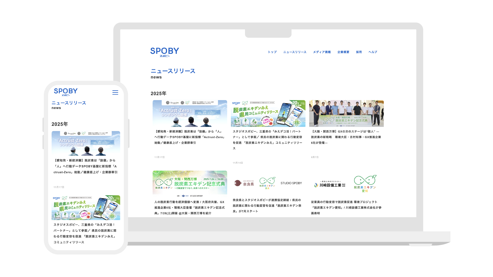
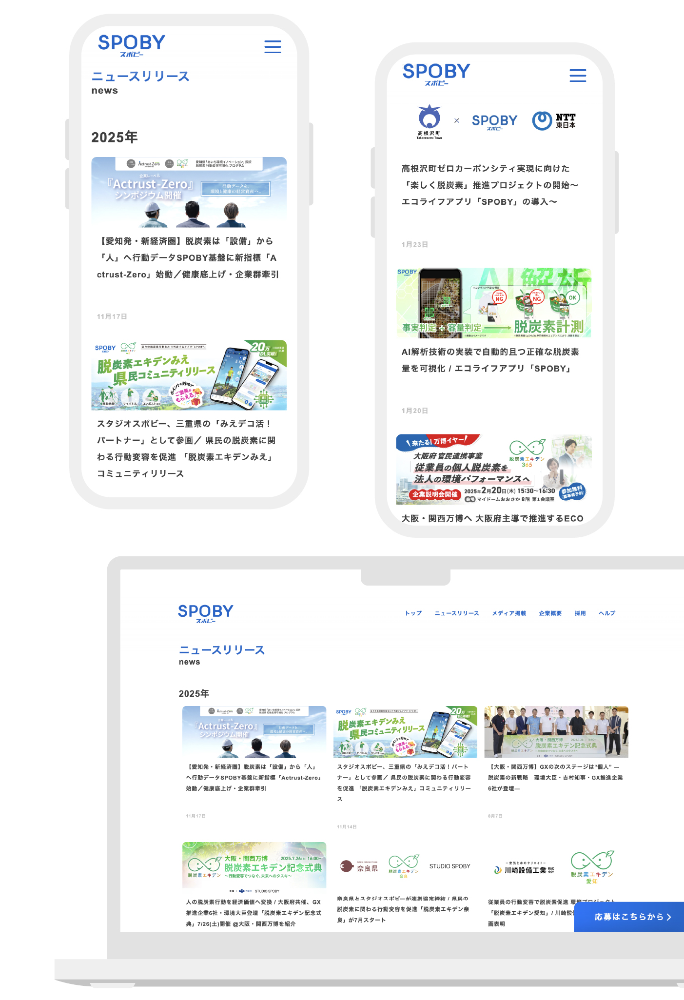
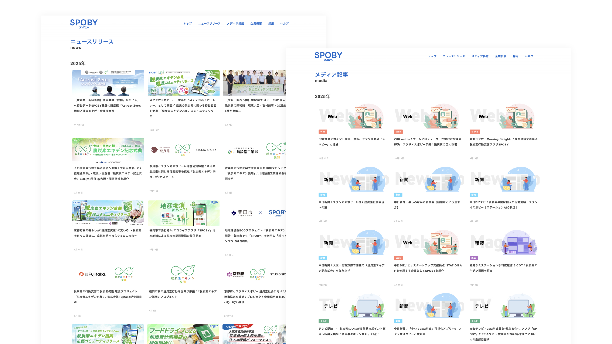
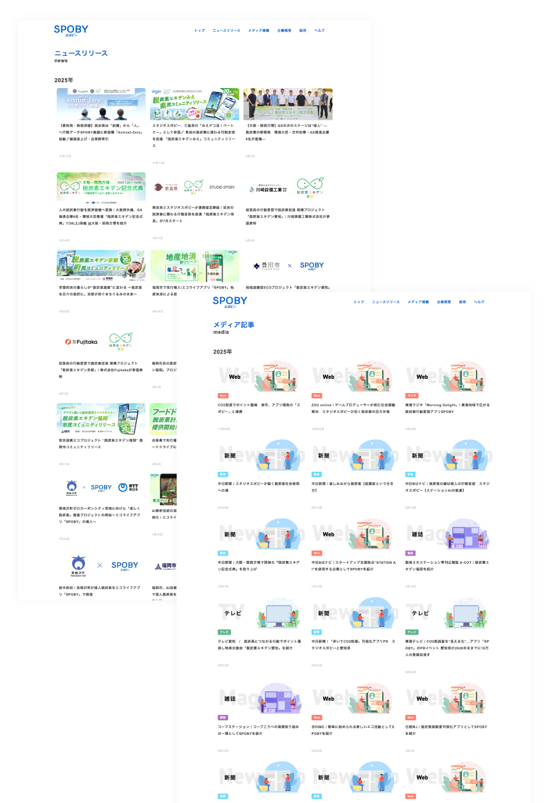

制作物名
制作背景・意図
SPOBY公式サイト ニュース/メディア掲載ページ
- 制作条件・概要
-
-
誰に向けたものか
SPOBYのサービスへや取り組みへの興味関心のある企業・自治体担当者やメディア事業者を主な対象
-
何を伝えるものか
SPOBYの取り組みや活動実績、メディア掲載情報を時系列で整理・発信し、サービスの信頼性や事業の広がりや企業・自治体との繋がりを促す役割を担うページ
-
どこで使われるか
SPOBY公式サイト内 ニュースリリース/メディアページ
-
誰に向けたものか
- 背景・課題
-
-
SPOBYはこれまで、脱炭素や健康増進といった領域において、自治体や企業と連携したさまざまな取り組みを行ってきました。しかし、それらの活動実績やメディア掲載情報が十分に整理・発信されておらず、一般消費者や新規の取引先に対して、事業内容や実績の全体像が伝わりにくいという課題がありました。また、実績があるにもかかわらず、自治体や企業との連携事業の内容や成果が体系的に可視化されていなかったため、新規の取引先や自治体からの問い合わせにつながりにくい状況でした。
-
- 制作目的
-
-
SPOBYの取り組みや活動実績、メディア掲載情報を発信することで、一般消費者に対してはアプリへの理解促進とダウンロード数の増加を図り、取引先に対しては企業としての信頼性やブランドイメージの向上につなげることを目的として制作しました。また、これまでの実績や取り組みを可視化することで、新規の取引先や自治体からの連携事業に関する問い合わせにつながることも狙いとしています。
-